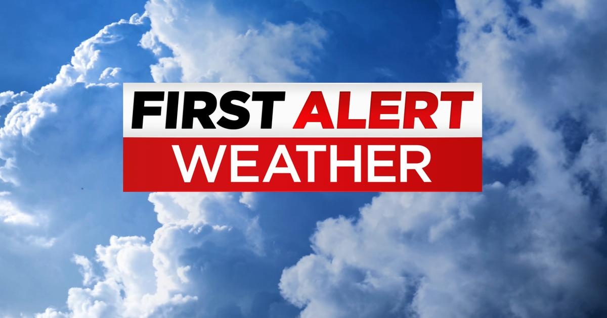

First Alert Weather: Red Alert Day for excessive heat, strong thunderstorms & air quality alertsAlerts: - Red Alert Thursday for excessive heat and the potential for strong to severe t'storms. - Red Alert Friday for excessive heat. - Yellow Alert Saturday for excessive heat and t'storms. Advisories: - Air Quality Alert in effect today from 11AM - 11PM for NYC, parts of the lower Hudson Valley, Long Island and southwest CT due to ground level ozone - Excessive Heat Warning (NYC, northeast/central NJ) today and tomorrow for feels like temps of up to 105-109 - Heat Advisory (elsewhere) today and tomorrow for feels like temps of 95-104. - Severe thunderstorm watch for our entire area through 11 p.m. Notes: Today's the start of a potential heat wave. A heat wave is 3 or more consecutive days of 90+ degree temperatures. Forecast: Things have been very busy for our northern counties late afternoon and early evening with multiple warnings issued and some storm reports, mainly for trees down in Orange Co. and northward into the SUDs. As for tomorrow, it will be hazy, hot and humid with a stray afternoon thunderstorm. Expect highs in the mid to upper 90s with feels like temps of 100-104+. Looking Ahead: Saturday will remain hot and humid with showers/thunderstorms likely. Highs that day will be in the low 90s with feels like temps in the upper 90s. As for Sunday, it will be cooler and less humid with highs in the 80s. CLICK HERE to stick with the CBS New York First Alert Weather team as we track the latest forecast and alerts. for more features. |
 |